Fédération des Services Sociaux
Capsules pour les réseaux sociaux
Cela fait près de deux ans que Jonas travaille à la Fédération des Services Sociaux comme chargé de communication. Il a eu, à cette occasion, l'opportunité de réaliser des dizaines de vidéos à destination des réseaux sociaux. Voici quelques arrêts sur image de certains projets : mobilisations, actions, présentation de services sociaux... Vous pouvez retrouver les vidéos sur la page instagram de la FdSS
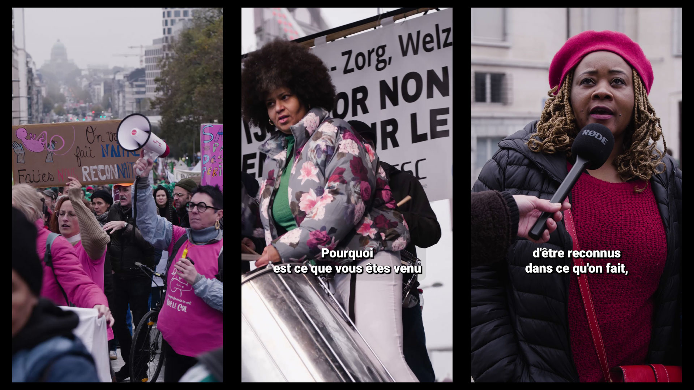
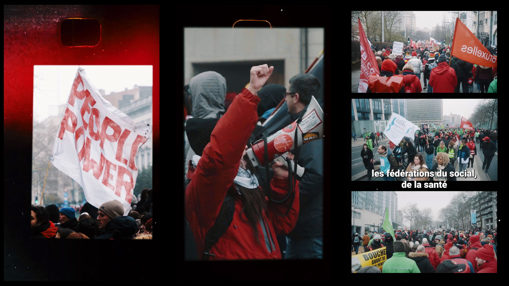
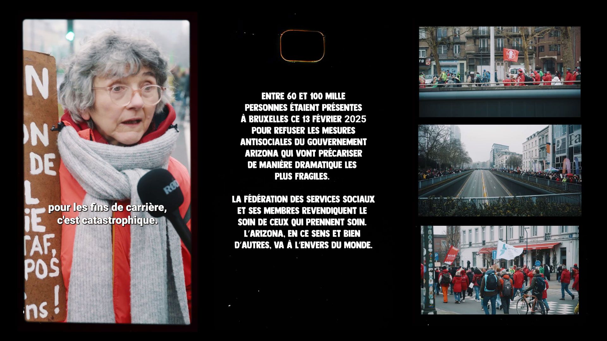
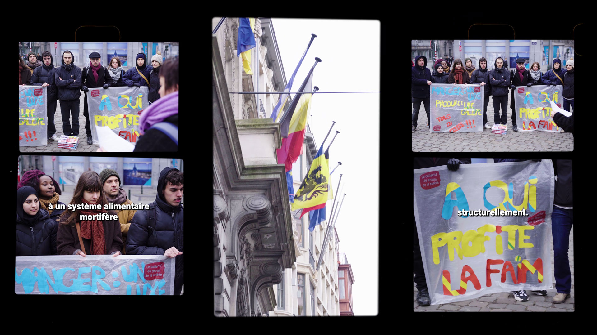
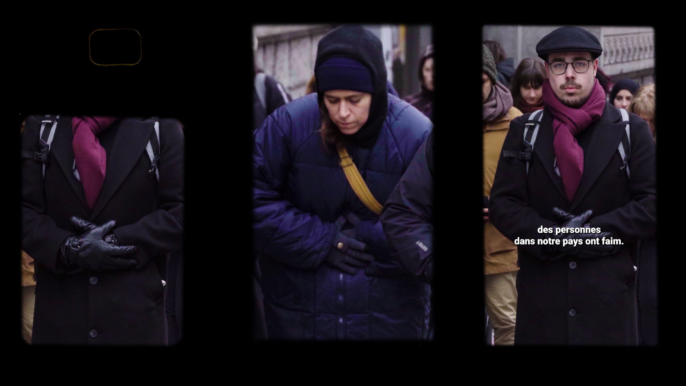
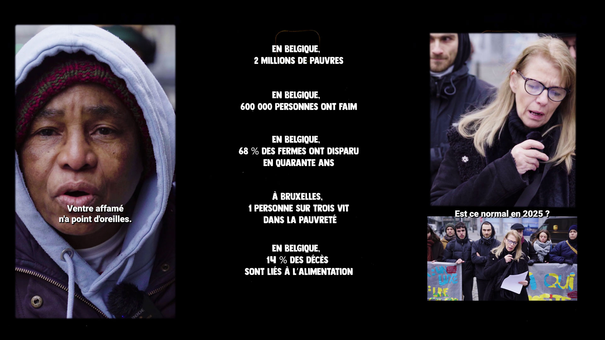
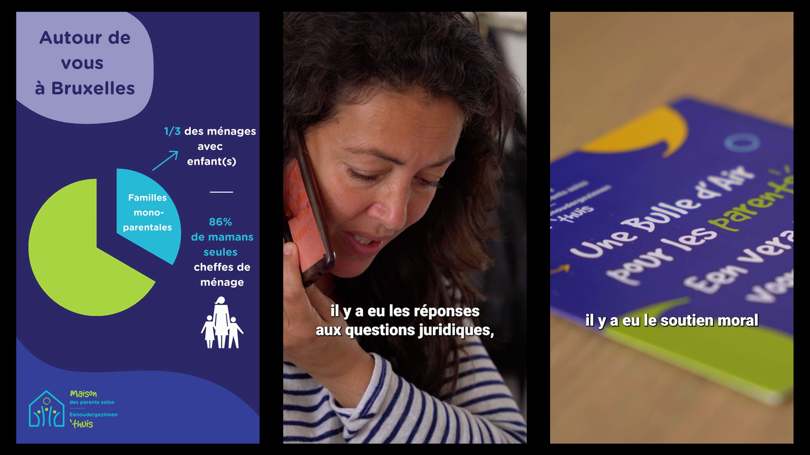
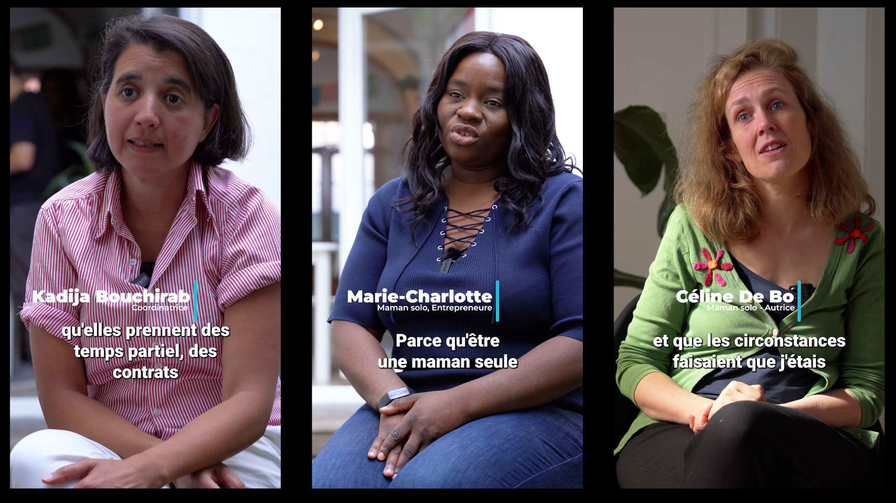
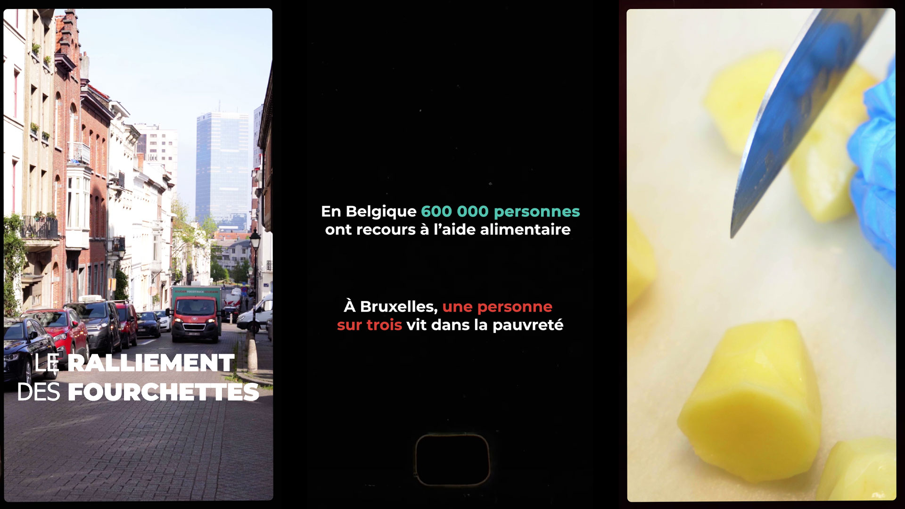
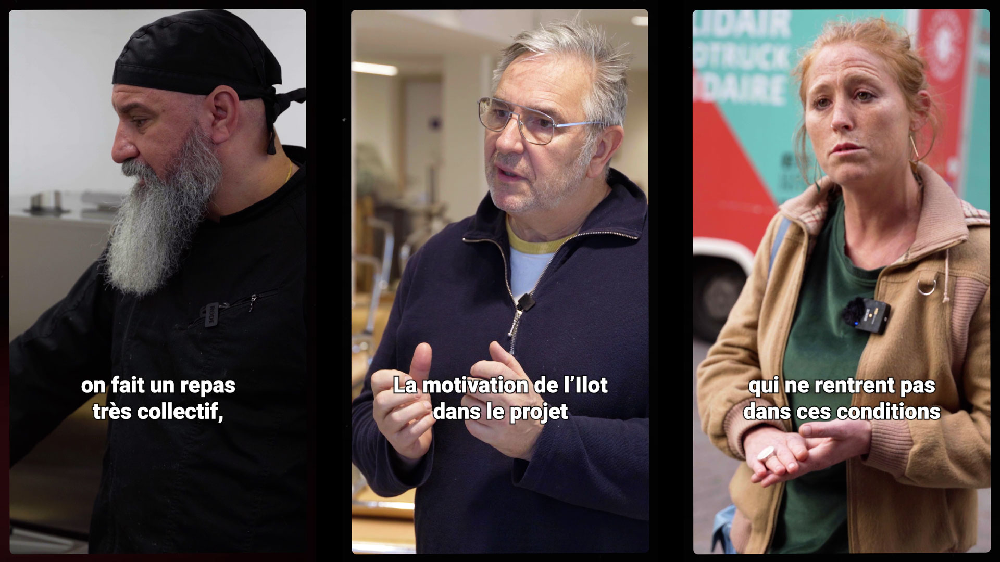
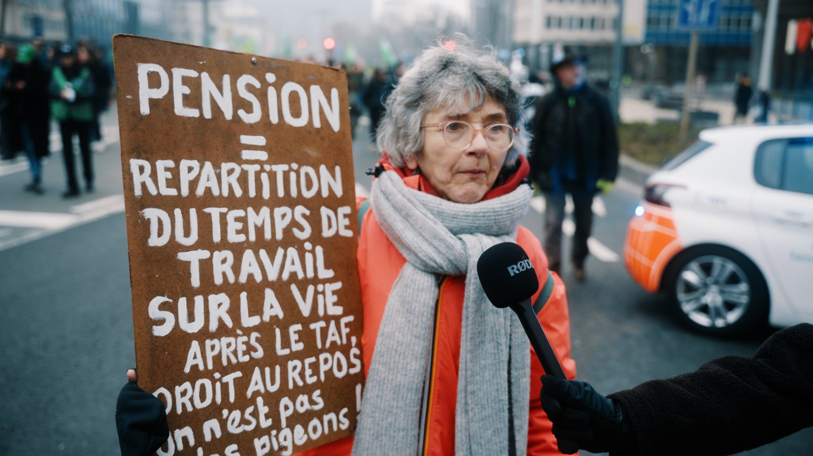